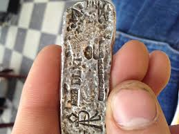
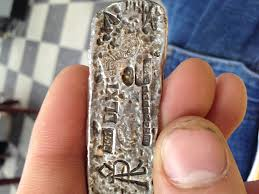

Success is sweet, but as Alex would say, "work harder, do more." So, that's exactly what we are doing. ALSF will fund more Bridge Grants in 2013, and add a new category, Springboard Grants. Similar to Bridge, these grants are designed to jump-start new projects with high impact potential while other funding is sought.

So what does this have to do with the new year, you ask? Simply put, in the last weeks of 2012 and the beginning of this year, we all reflect on what was and what might have been, what we accomplished and what we could have done better. We know that we are pushing to make strides in the battle against childhood cancer, filling the gaps in research, and we also know, that there is so much more ahead. So, my new year's resolution is to follow the advice of my daughter Alex, and I hope you will join me: "Work harder, do more." - Jay Scott

So what does this have to do with the new year, you ask? Simply put, in the last weeks of 2012 and the beginning of this year, we all reflect on what was and what might have been, what we accomplished and what we could have done better. We know that we are pushing to make strides in the battle against childhood cancer, filling the gaps in research, and we also know, that there is so much more ahead. So, my new year's resolution is to follow the advice of my daughter Alex, and I hope you will join me: "Work harder, do more." - Jay Scott